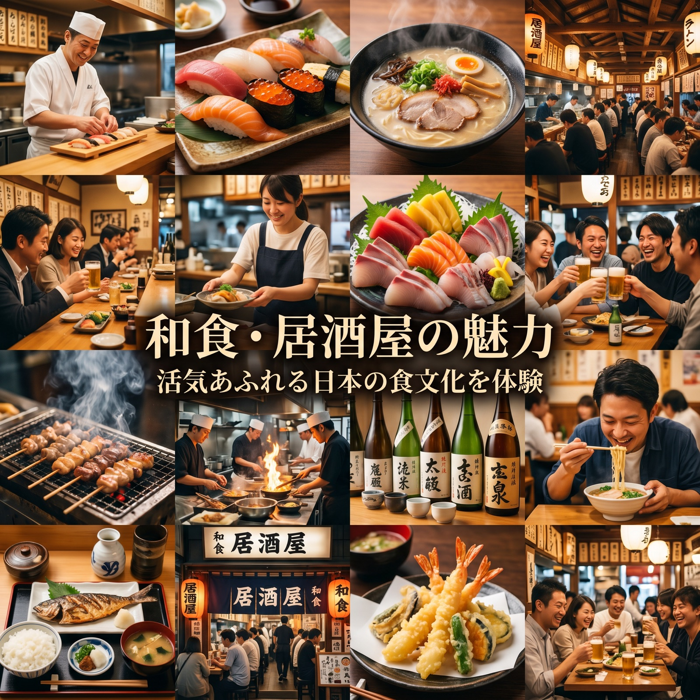

15+
支援企業数
100+
運用アカウント数
300%
平均フォロワー増加率
小紅書（RED / RedNote）は、中国版Instagramとも呼ばれる写真・動画共有プラットフォーム。
訪日前の中国人観光客が「行きたい場所」「食べたいもの」を検索する、インバウンド集客の最重要チャネルです。
3億+
月間アクティブユーザー数
80%
ユーザーの女性比率
（高購買力層）
70%
訪日前に小紅書で
情報収集する中国人
No.1
訪日中国人が使う
旅行情報SNS
訪日前の中国人観光客は小紅書で「日本 グルメ」「東京 観光」などを検索。来日前から貴社を認知させることができます。
インフルエンサー（KOL）や一般ユーザー（KOC）の口コミ投稿が爆発的に拡散。広告より信頼される「リアルな体験談」で集客を加速します。
ユーザーの80%が女性で、美容・グルメ・ファッション・旅行への消費意欲が高い層が中心。投資対効果の高いプロモーションが可能です。
アカウント開設から成果報告まで、すべてPROTECHにお任せください。
ターゲット分析・競合調査・ブランドポジショニングを行い、最適な運用戦略を策定。公式アカウントの開設・認証取得まで代行します。
中国語ネイティブライターが、小紅書のアルゴリズムに最適化した写真・動画・テキストを制作。月次投稿カレンダーに沿って定期配信します。
業種・予算・目標に合わせたKOL/KOCを選定・交渉・管理。口コミ投稿の品質管理から効果測定まで一貫して対応します。
小紅書の純広告（フィード広告・検索広告）を活用し、ターゲット層へのリーチを最大化。予算配分の最適化とA/Bテストで費用対効果を高めます。
中国語でのコメント返信・DM対応を代行。ユーザーとのエンゲージメントを高め、来店・予約・購買へとつなげます。
フォロワー数・インプレッション・エンゲージメント・来店数などをデータで可視化。毎月の改善提案で継続的に成果を向上させます。
日中両言語のバイリンガルスタッフが、文化の壁を越えた最適な戦略を策定します。
IT企業ならではのデータ分析・自動化ツールで、他社にはない精度の高い運用を実現。
戦略立案から実行・分析まで、すべてを一社で完結。複数外注の必要がありません。
直感に頼らない、緻密なデータ分析に基づくPDCA運用で成果を最大化します。
小紅書（RED）は中国最大のライフスタイルSNS。訪日中国人の70%が旅行前に小紅書で情報収集します。アカウント運用代行からKOL施策・広告運用まで、PROTECHがワンストップで支援します。
3億+
月間アクティブ
ユーザー
70%
旅行前に利用
する中国人
No.1
訪日中国人が使う旅行情報SNS
大衆点評は中国最大の口コミ・ナビゲーションアプリ。公式店舗登録からクーポン設定・口コミ管理まで、PROTECHがワンストップでサポートします。飲食・観光・小売など幅広い業種に対応。
7億+
累計登録
ユーザー
80%
訪日中国人
の利用率
No.1
中国最大の口コミアプリ
数字で見る成果
50,000+
KOL施策 累計リーチ数
3ヶ月
平均効果実感まで
98%
顧客継続率
5言語
対応スタッフ常駐
「PROTECH」導入についてのご相談や資料請求はこちらから